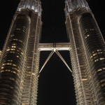
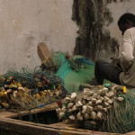
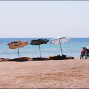
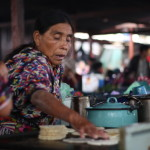
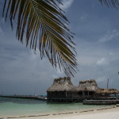
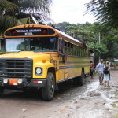
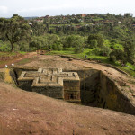
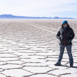
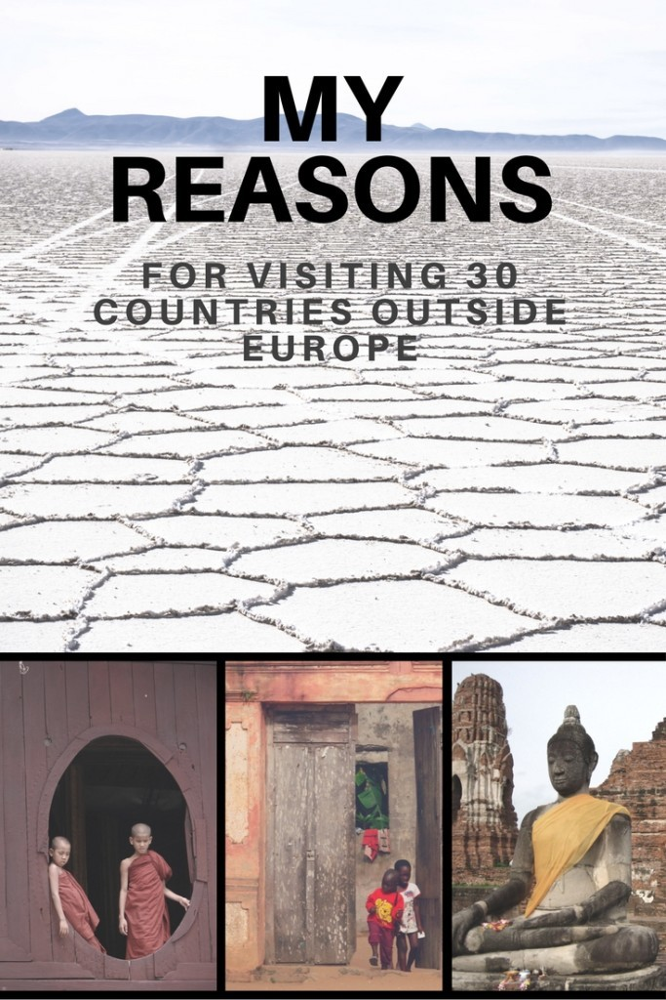

Why did you go to that place? This is the question that I hear pretty often. Sometimes it’s asked with a voice full of surprise because a person has no idea what’s there.
So, having travelled quite a lot, I’ve decided to list all the explanations in one place. Here there are!
 Thailand – a friend told me it’s a perfect country for the first far solo trip as it is touritst-friendly, the transportation is easy and cuisine is delicious.
Thailand – a friend told me it’s a perfect country for the first far solo trip as it is touritst-friendly, the transportation is easy and cuisine is delicious.
I started my trip with quite untouristy areas and I loved Thailand, but then I travelled in very touristy places and I loved it as well.
So if you ask me how to start your exotic solo trips, for sure I’ll tell you to go to Thailand.
Â
Cambodia – it’s a neigbhour of Thailand so I couldn’t miss Angor Wat, so well known to me from a Lara Croft film. I fell in love with Angor, I felt sad learning the history of the country in Phnom Pehn, I left the country feeling I didn’t have enough time to explore it and I hope to go back one day.
Â
Malaysia – the only reason I can remember for going there is that it was next to Thailand. The food was good, I enjoyed my first time in a jungle and moving around was pretty easy – this is what I remember, but strangely enough, I didn’t particularly like the country. Many people are surprised to hear that and they say it’s a country that has a lot to offer – I might give it one more chance one day.
Â
 Thailand – I wanted to go to China (even started private lessons of Chinese), but then my family said they’d love to explore Thailand the way I had a year before – my stories must have been really good.
Thailand – I wanted to go to China (even started private lessons of Chinese), but then my family said they’d love to explore Thailand the way I had a year before – my stories must have been really good.
I took them to Thailand then – I visited most of the places for the second time and I still loved them.
So, I do recommend you to visit Thailand – it is a great country whether you travel in typical places for tourists or off-the beaten track.
 Myanmar – ten years ago, when I chose it as my holiday destination, it wasn’t very popular with the tourists. It seemed to be mysterious and hard to access (you could only fly in, no overland border crossing, my phone went dead the moment I landed in the capital, and the Internet was basically nonexistent.
Myanmar – ten years ago, when I chose it as my holiday destination, it wasn’t very popular with the tourists. It seemed to be mysterious and hard to access (you could only fly in, no overland border crossing, my phone went dead the moment I landed in the capital, and the Internet was basically nonexistent.
I went there because of the photos I saw online – I really disliked the author, but he inspired me so I’m somehow grateful for that inspiration.
 Singapore – I remember that day I was coming back from the beach on Kho Phi Phi wondering where to go next, when I saw a travel agency advertising different bus rides – I went in, bought a ticket to Singapore and two days later I went there.
Singapore – I remember that day I was coming back from the beach on Kho Phi Phi wondering where to go next, when I saw a travel agency advertising different bus rides – I went in, bought a ticket to Singapore and two days later I went there.
One of the biggest travelling surprises – amazing cuisine is one of the reasons I’ll go back one day.
Â
Ghana – after two holidays spent in Asia (four months altogether) I decided I was an “experienced traveller†ready to “discover†Africa.
Ghana was supposed to be one of the most developed countries in the region and it has English as its official language – seems like a perfect country for the first-time Africa.
It wasn’t easy and I didn’t feel like in a developed country – well, for the first week, then I got used and it was easy and developed. Looking back, I need to admit that was one of the most fascinating holidays ever!
 Togo – together with Benin, this country is the cradle of voodoo. Sounds fascinating, doesn’t it? Well, it did for me, and I decided to go there.
Togo – together with Benin, this country is the cradle of voodoo. Sounds fascinating, doesn’t it? Well, it did for me, and I decided to go there.
It’s so untouristy that it doesn’t even deserve a guidebook so I had to manage with a chapter from the Lonely Planet guidebook on West Africa.
If it wasn’t for a festival, I’d say there’s nothing to do, but doing nothing in such an unusual place was a big adventure.
 Benin – this French-speaking country dord deserve a guidebook as travelling there might be a mixture of culture and adventure.
Benin – this French-speaking country dord deserve a guidebook as travelling there might be a mixture of culture and adventure.
It was the first time in my life I was unable to find anyone to communicate in English with, there was no typical public transportation and there were hardly any white tourists there (it is not really important to me now, but then I found it difficult to get used to standing out of the crowd all the time).
I loved the country, but I was tired when I left – I guess it might not have been the best country for the first-time Africa.
Egypt – the reason was simple: diving! Everybody kept saying is an affordable place for diving so I didn’t think long before buying a ticket. Two weeks of underwater exploration with some quad trips and a day of sunbathing. Each day in a different restaurant by the sea.
A perfectly relaxing holiday.
Â
Â
Guatemala – I learnt Spanish to be able to communicate in Spain, but when I got the satisfactory level I decided to put off Spain till some other time in the future and go somewhere far away. Guatemala seemed the best as it it popular with language learners because of numerous good schools offering one-to-one classes.
I loved this kind of learning, and I do recommend it.
Â
Belize – because of the coup d’etat in Honduras where I was supposed to dive around a lovely island of Utila, I had to come up with the idea of a beach holiday somewhere else – that’s how I spent some wonderful time in Caye Caulker and Ambergris Cays. I went diving in a famous Blue Hole which was amazing.
It was my first meeting with the Carribeans and I absolutely loved it.
Â
 Honduras – the news report claimed that the coup d’etat was not really serious and I really needed to get to Nicaragua, so I decided we should cross Honduras.
Honduras – the news report claimed that the coup d’etat was not really serious and I really needed to get to Nicaragua, so I decided we should cross Honduras.
The famous Copan ruins were almost deserted and we stayed twice in San Pedro Sula, which as I found out later, is one of the most dangerous cities in the word.
I didn’t really see much of the capital – through the bus windows only, there were too many soldiers around and the country didn’t really look inviting.
Nicaragua – I heard it’s another good country to learn Spanish so I went there.
Well, it was not as good as Guatemal, but good enough.
Pretty safe, apart from the capital which everybody advised us to avoid (not really possible, but we ran away as fast as we could).
Â
 Mexico – the ticket was cheap, and after my first stay in Latin America I knew I wanted to go back.
Mexico – the ticket was cheap, and after my first stay in Latin America I knew I wanted to go back.
The country is easy to travel and so huge that everybody should find something interesting there.
I hope to go back one the to explore more of it and dive again in cenotes.
Â
 Colombia – I wanted to go to the South America, but tickets to Peru/Bolivia were to expensive for me so I opted for Colombia which was half the price.
Colombia – I wanted to go to the South America, but tickets to Peru/Bolivia were to expensive for me so I opted for Colombia which was half the price.
I was planning on landing in Bogota, moving to Ecuador and spending most of my time there, but Colombia turned out to be such a great country that I quickly returned from Ecuador to enjoy more of it.
I regard it as one of the friendliest countries I’ve visited – it’s good to know Spanish when you go there as people are really friendly, helpful and talkative.
Ecuador – I thought Colombia would be boring and I’d slowly explore Ecuador.
Well, it was a very good country, but I was fascinated with Colombia more so after spending some short time in the country I left it much earlier than I was supposed to.
Â
Â
Turkey – actually the only place I visited was Istambul which is a bit in Europe and a bit in Asia. I thought it would be perfect for a couple of days with friends and I was right. Tasty cuisine and sweets, great baths and beautiful mosques where we shivered from cold when we had to take off our shoes in minus ten Centigrades.
I’ll go back one day but not in winter, that’s for sure.
Â
 Cuba – tickets to Peru or Bolivia were still too expensive for me, but there was a special deals for flights to Cuba.
Cuba – tickets to Peru or Bolivia were still too expensive for me, but there was a special deals for flights to Cuba.
(Almost) everybody says they’d love to visit the country because of its atmosphere, colours and music so I didn’t hesitate long.
Â
Â
 Georgia – I made a comment under a Facebook picture of Russia (St Petersburg, I guess) and said I’d love to visit the place. Before long, a friend called me and announced that another friend was coming to our city to discuss the trip.
Georgia – I made a comment under a Facebook picture of Russia (St Petersburg, I guess) and said I’d love to visit the place. Before long, a friend called me and announced that another friend was coming to our city to discuss the trip.
Well, I did wanted to go back to Russia, but not then, some time in the future. Fortunately, I managed to convince my friends that one of the post-Soviet republics would be just fine.
Â
Armenia – Georgia’s neigbour was supposed to be as interesting as Georgia, but less touristy so the decision was fast: Georgia + Armenia. Seven women, five days, a rented car with a driver and a guide – an ideal country for a short trip.
Â
Â
 Israel – I was looking for somehere near (short flight away) for my winter holidays and finally I had to decide between Sweden (Stockholm) and Israel (Jerusalem).
Israel – I was looking for somehere near (short flight away) for my winter holidays and finally I had to decide between Sweden (Stockholm) and Israel (Jerusalem).
I chose the latter as it seemed warmer (it was), with better food (I know nothing of Swedish food, but I was satisfied with Israeli cuisine) and cheaper (not really, but as I was doing cat-sitting in Jerusalem it was not very bad).
Â
Ethiopia – tickets to Peru or Bolivia were too expensive again so when three weeks before my holidays were supposed to start I realised I had no air ticket and no idea where to go I was desperate.
Ethiopia came up as the ticket were reasonably prices. It was cheap in the country as well, and most importantly, Ethiopia had the best coffee I had ever tasted!
If I ever go back, I’ll do it because of coffee.
 Somaliland – The Lonely Planet issued a new edition of its Ethiopia guidebook in 2013. It no longer featured Erithrea (as it was at war with Ethiopia), but Somaliland.
Somaliland – The Lonely Planet issued a new edition of its Ethiopia guidebook in 2013. It no longer featured Erithrea (as it was at war with Ethiopia), but Somaliland.
The introduction to a very short chapter said: For seasoned travellers in search of a totally unusual travel experience, Somaliland is a must.
Yes, this one sentence made me go to a country I knew nothing about.
Â
Peru – tickets to Peru or Bolivia were still expensive, but I decided I was not going to wait any longer and no matter what the price I’d go. So I bought the most expensive air ticket ever and too make it less expensive I flew from Berlin via Madrid and Santiago de Chile with eight-hour stopovers at each airport.
I was tired but it was totally worth it!
Â
Bolivia – one of my dream destinations because of the big salt flats that is Salar de Uyuni. It turned out to be much more than that and I enjoyed every day I spent there.
One of the countries I’ll definitely visit again one day.
Â
Â
 Argentina – I didn’t really plan on exploring Argentina, but when I got to the south of Bolivia I realised how close I was to great steaks and wine I’d always wanted to taste so I couldn’t miss.
Argentina – I didn’t really plan on exploring Argentina, but when I got to the south of Bolivia I realised how close I was to great steaks and wine I’d always wanted to taste so I couldn’t miss.
Every day of my ten-day stay in this country was concluded in a restaurant with a steak and a bottle of wine.
I haven’t learnt tango so I need to go back one day even though I’m not a fan of the accent Spanish has in this country.
 Uruguay – just a ferry ride from Buenos Aires so I was curious to explore one more country.
Uruguay – just a ferry ride from Buenos Aires so I was curious to explore one more country.
Thanks to this visit I finally stopped mixing Uruguay with Paraguay – I had never been able to remember which had Montevideo and which Asuncion as their capitals. Now I know.
Â
Â
 Chile – to make my ticket to Peru cheaper I had to fly back from Chile.
Chile – to make my ticket to Peru cheaper I had to fly back from Chile.
I didn’t have much time to explore it, and as I was a bit tired after two-month intensive travelling I spent most of my time enjoying Chilean wine and seafood.
Â
Â
Tanzania – if not Latin America, then the second best destination is Africa!
I missed this continent much so I found three travel companions who I convinced to go with me (it’s the most economical option in terms of sharing the costs of transportation and accommodation). I suggested five destinations to my friends, putting Tanzania on the very last position as it was the country I wanted to visit the least. Unfortunately, when they heard about safari and Zanzibar there didn’t want to discuss anything else. Or should I say ‘fortunately’? Zanzibar was like a paradise, and safari turned out to be one of the best travel experiences ever.
Iran – recently this country has been really popular with my fellow travel blogers because of cheap flights there and everybody went crazy what a special country it was.
When a good deal to Iran appeared I simply bought a ticket without much thinking. A special country it was, indeed.
Â
 Wietnam – My friends have tried to convince me to go back to Asia for he last few years, but I’ve been interested in other destinations. Then, one day, as I was eating pho soup in a restaurant I suddenly thought it would be great to find out how the original version tastes. So that’s my plan for August 2017: eat pho soup in Hanoi 🙂
Wietnam – My friends have tried to convince me to go back to Asia for he last few years, but I’ve been interested in other destinations. Then, one day, as I was eating pho soup in a restaurant I suddenly thought it would be great to find out how the original version tastes. So that’s my plan for August 2017: eat pho soup in Hanoi 🙂
Â
Â
SUMMING UP:
It was exactly ten years ago when I was planning my first to the other continent and was wondering what it was going to be like. I had no idea then it was just the very first far-away trips that were to come.
Now, ten years later, I need to say that I can go everywhere because in each place you can find something interesting if you are curious of the world.
This year I decided to spend my holiday driving around my own country and some of my friends asked me if I didn’t regret buying another plane ticket. I didn’t it was a great holiday and I enjoyed it immensly.
Still, next year I’ll go somehwere far, because there were some things I really miss this year.
What I missed I’m going to tell you some other time.
 LIKED IT? PIN IT!


{kind=link}
{kind=link}
{kind=link}
{kind=link}
{kind=link}
{kind=link}
{kind=link}
{kind=link}
{kind=link}
{kind=link}
{kind=link}
{kind=link}
{kind=link}
{kind=link}
{kind=link}
{kind=link}